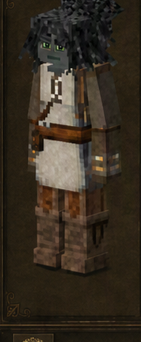
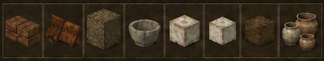

Alfarero
Brickmaker · código oficial
brickmaker · ficha 03/16
Rasgos: 7
Bonus: 12
Malus: 5
Recetas: 70

Resumen humano
constructor material. Objetivamente fuerte para arcilla, tierra y porcelana; vulnerable al fuego.
Esta línea es interpretación funcional breve; lo importante son los números y recetas de abajo.
Bonus objetivos
- ahorro de durabilidad de pala: **+75%** (valor interno `0.75`)
- daño recibido global: **-20%** (valor interno `-0.2`)
- drop de arcilla: **+100%** (valor interno `1`)
- drop de hierba: **+25%** (valor interno `0.25`)
- drop de palos: **+25%** (valor interno `0.25`)
- drop de turba: **+25%** (valor interno `0.25`)
- velocidad con arcilla/cerámica: **+100%** (valor interno `1`)
- velocidad con arena: **+100%** (valor interno `1`)
- velocidad con grava: **+100%** (valor interno `1`)
- velocidad con nieve: **+100%** (valor interno `1`)
- velocidad con tierra: **+100%** (valor interno `1`)
- vida máxima: **+50%** (valor interno `0.5`)
Malus objetivos
- afectación de armadura a velocidad: **+20%** (valor interno `0.2`)
- daño recibido por fuego: **+100%** (valor interno `1`)
- drop de frutales: **-75%** (valor interno `-0.75`)
- drop de semillas cultivadas: **-75%** (valor interno `-0.75`)
- drop de semillas/brotes de árbol: **-75%** (valor interno `-0.75`)
Rasgos oficiales y efectos reales
| Rasgo | Tipo | Datos objetivos |
|---|---|---|
Luchadorbruiser | positivo | vida máxima: +50% (interno 0.5)daño recibido global: -20% (interno -0.2)afectación de armadura a velocidad: +20% (interno 0.2) |
Alfarerobrickmaker | positivo | sin atributos numéricos en traits.json; desbloqueo/rasgo de receta |
Excavador de arcilladelver | positivo | drop de arcilla: +100% (interno 1)velocidad con arcilla/cerámica: +100% (interno 1) |
Excavadorexcavator | positivo | ahorro de durabilidad de pala: +75% (interno 0.75)velocidad con tierra: +100% (interno 1)velocidad con grava: +100% (interno 1)velocidad con arena: +100% (interno 1)velocidad con nieve: +100% (interno 1) |
Operario de Hornokilnhand | positivo | drop de hierba: +25% (interno 0.25)drop de turba: +25% (interno 0.25)drop de palos: +25% (interno 0.25) |
Recolector pobrescourer | negativo | drop de semillas cultivadas: -75% (interno -0.75)drop de semillas/brotes de árbol: -75% (interno -0.75)drop de frutales: -75% (interno -0.75) |
Inflamableflammable | negativo | daño recibido por fuego: +100% (interno 1) |
Recetas / desbloqueos
65mesa normal
3estación
2compatibilidad
70salidas listadas
Categorías detectadas
Yeso y revestimientos: 20Adobe y enlucidos: 15Cerámica en lote: 8Tejados y piezas de cubierta: 7Ladrillos de arcilla: 6Utensilios de cocina: 3Ladrillos de barro: 3Cuba de mezclas y alquimia: 3Pastas y mezclas: 2Bricklayers: cerámica en lote: 2Tierra compactada: 1
Ver salidas exactas de recetas de esta clase (70)
| Modo | Categoría legible | Resultado legible | Nombre ES |
|---|---|---|---|
| mesa de crafteo normal | Cerámica en lote | Rawbrick arcilla ×4 | — |
| mesa de crafteo normal | Cerámica en lote | Refractorybrick raw tier1 ×2 | — |
| mesa de crafteo normal | Cerámica en lote | Refractorybrick raw tier2 ×2 | — |
| mesa de crafteo normal | Cerámica en lote | Refractorybrick raw tier3 ×2 | — |
| mesa de crafteo normal | Cerámica en lote | Refractorybrick raw tier3 ×2 | — |
| mesa de crafteo normal | Cerámica en lote | Shingle raw arcilla ×32 | — |
| mesa de crafteo normal | Cerámica en lote | Claytile raw liso arcilla ×12 | — |
| mesa de crafteo normal | Cerámica en lote | Oillamp genie arcilla raw ×4 | — |
| mesa de crafteo normal | Ladrillos de arcilla | Claybricks uneven cuádruple running arcilla ×16 | — |
| mesa de crafteo normal | Ladrillos de arcilla | Claybricks uneven cuádruple soldier arcilla ×16 | — |
| mesa de crafteo normal | Ladrillos de arcilla | Claybricks uneven cuádruple header arcilla ×16 | — |
| mesa de crafteo normal | Ladrillos de arcilla | Claybricks uneven cuádruple running refractaria ×16 | — |
| mesa de crafteo normal | Ladrillos de arcilla | Claybricks uneven cuádruple soldier refractaria ×16 | — |
| mesa de crafteo normal | Ladrillos de arcilla | Brickruin irregular arcilla ×1 | — |
| mesa de crafteo normal | Adobe y enlucidos | Daubraw ash ×16 | — |
| mesa de crafteo normal | Adobe y enlucidos | Daubraw ash ×16 | — |
| mesa de crafteo normal | Adobe y enlucidos | Daubraw browngolden ×16 | — |
| mesa de crafteo normal | Adobe y enlucidos | Daubraw marrón ×16 | — |
| mesa de crafteo normal | Adobe y enlucidos | Daubraw browngolden ×16 | — |
| mesa de crafteo normal | Adobe y enlucidos | Daubraw brownlight ×16 | — |
| mesa de crafteo normal | Adobe y enlucidos | Daubraw brownlight ×16 | — |
| mesa de crafteo normal | Adobe y enlucidos | Daubraw browngolden ×16 | — |
| mesa de crafteo normal | Adobe y enlucidos | Daubraw brownweathered ×16 | — |
| mesa de crafteo normal | Adobe y enlucidos | Daubraw green ×16 | — |
| mesa de crafteo normal | Adobe y enlucidos | Daubraw orange ×16 | — |
| mesa de crafteo normal | Adobe y enlucidos | Daubraw tan ×16 | — |
| mesa de crafteo normal | Adobe y enlucidos | Daubraw tan ×16 | — |
| mesa de crafteo normal | Adobe y enlucidos | Daubraw browngolden ×16 | — |
| mesa de crafteo normal | Adobe y enlucidos | Daubraw yellow ×16 | — |
| mesa de crafteo normal | Utensilios de cocina | Porcelainbowl ×1 | — |
| mesa de crafteo normal | Utensilios de cocina | Porcelaincrock ×1 | — |
| mesa de crafteo normal | Utensilios de cocina | Porcelainvessel ×1 | — |
| mesa de crafteo normal | Ladrillos de barro | Mudbrick light ×8 | — |
| mesa de crafteo normal | Ladrillos de barro | Mudbrick dark ×8 | — |
| mesa de crafteo normal | Ladrillos de barro | Mudbrickslab dark abajo libre ×8 | — |
| mesa de crafteo normal | Tierra compactada | Packeddirt ×2 | — |
| mesa de crafteo normal | Pastas y mezclas | Lime ×4 | — |
| mesa de crafteo normal | Pastas y mezclas | Mortar ×8 | — |
| mesa de crafteo normal | Yeso y revestimientos | Plaster liso ×8 | — |
| mesa de crafteo normal | Yeso y revestimientos | Overlay Yeso y revestimientos white normal ×16 | — |
| mesa de crafteo normal | Yeso y revestimientos | Overlay Yeso y revestimientos yellow normal ×16 | — |
| mesa de crafteo normal | Yeso y revestimientos | Overlay Yeso y revestimientos yellow normal ×16 | — |
| mesa de crafteo normal | Yeso y revestimientos | Overlay Yeso y revestimientos yellow normal ×16 | — |
| mesa de crafteo normal | Yeso y revestimientos | Overlay Yeso y revestimientos yellow normal ×16 | — |
| mesa de crafteo normal | Yeso y revestimientos | Overlay Yeso y revestimientos white normal ×16 | — |
| mesa de crafteo normal | Yeso y revestimientos | Overlay Yeso y revestimientos white parte superior rim ×1 | — |
| mesa de crafteo normal | Yeso y revestimientos | Overlay Yeso y revestimientos white zigzag ×1 | — |
| mesa de crafteo normal | Yeso y revestimientos | Overlay Yeso y revestimientos white bottom rim ×1 | — |
| mesa de crafteo normal | Yeso y revestimientos | Overlay Yeso y revestimientos white cracked ×1 | — |
| mesa de crafteo normal | Yeso y revestimientos | Overlay Yeso y revestimientos white damaged ×1 | — |
| mesa de crafteo normal | Yeso y revestimientos | Overlay Yeso y revestimientos white crumbled ×1 | — |
| mesa de crafteo normal | Yeso y revestimientos | Overlay Yeso y revestimientos white normal ×1 | — |
| mesa de crafteo normal | Yeso y revestimientos | Overlay Yeso y revestimientos yellow zigzag ×1 | — |
| mesa de crafteo normal | Yeso y revestimientos | Overlay Yeso y revestimientos yellow parte superior rim ×1 | — |
| mesa de crafteo normal | Yeso y revestimientos | Overlay Yeso y revestimientos yellowwhite bottom rim ×1 | — |
| mesa de crafteo normal | Yeso y revestimientos | Overlay Yeso y revestimientos yellowwhite zigzag ×1 | — |
| mesa de crafteo normal | Yeso y revestimientos | Overlay Yeso y revestimientos yellow bottom rim ×1 | — |
| mesa de crafteo normal | Yeso y revestimientos | Overlay Yeso y revestimientos yellow normal ×1 | — |
| mesa de crafteo normal | Tejados y piezas de cubierta | Tejado inclinado materialclay este libre ×8 | — |
| mesa de crafteo normal | Tejados y piezas de cubierta | Cumbrera de tejado materialclay norte-sur libre ×8 | — |
| mesa de crafteo normal | Tejados y piezas de cubierta | Punta de tejado materialclay libre ×8 | — |
| mesa de crafteo normal | Tejados y piezas de cubierta | Esquina interior de tejado materialclay este libre ×8 | — |
| mesa de crafteo normal | Tejados y piezas de cubierta | Esquina exterior de tejado materialclay este libre ×8 | — |
| mesa de crafteo normal | Tejados y piezas de cubierta | Beam ridge materialclay libre ×16 | — |
| mesa de crafteo normal | Tejados y piezas de cubierta | Beam plane materialclay libre ×16 | — |
| estación especial | Cuba de mezclas y alquimia | Mortar ×8 | — |
| estación especial | Cuba de mezclas y alquimia | Plaster liso ×8 | — |
| estación especial | Cuba de mezclas y alquimia | Lime ×4 | — |
| receta de compatibilidad | Bricklayers: cerámica en lote | Clayrawtile raw arcilla ×2 | — |
| receta de compatibilidad | Bricklayers: cerámica en lote | Clayshingle raw malaquita ×32 | — |
Archivos de esta ficha
Las exportaciones PNG/MD se generan desde la ficha dinámica actual.